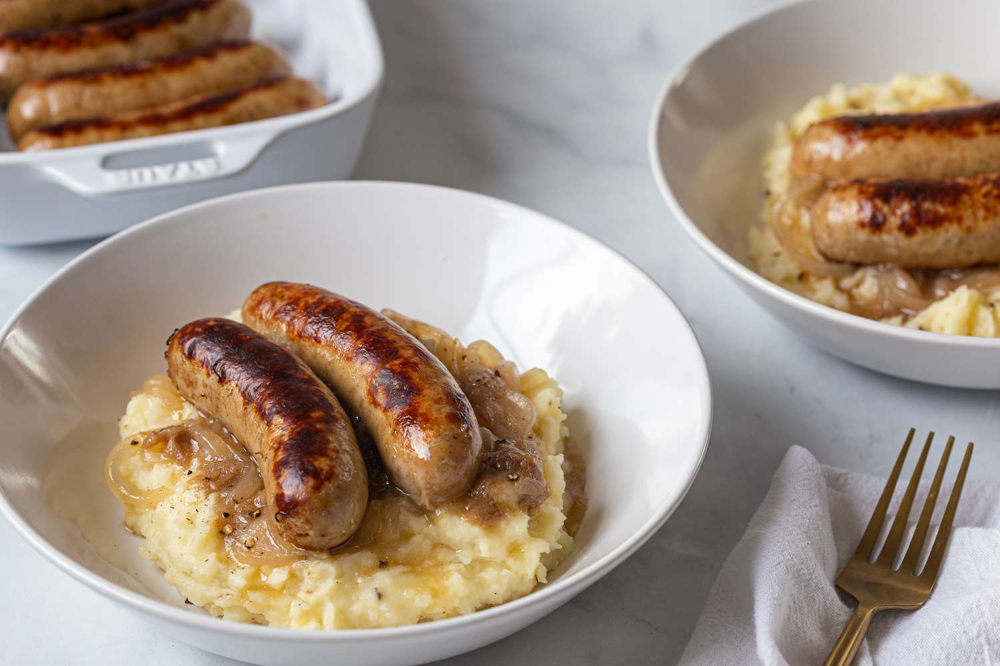

Best Sausages for Bangers and Mash
For a really classic Bangers and Mash experience, you can’t go past some
big, fat pork sausages. Look for good quality ones that are all meat, no
fillers – check the ingredients or ask your butcher.
What you need to make Bangers and Mash Gravy
-
Sausages drippings – This refers to the brown bits stuck on the base of
the pan and the oil / sausage juices that are left in the skillet after
browning them. Sausage drippings are the key to wickedly delicious Onion
Gravy!
-
Garlic and onion – Essential base flavouring ingredients for many, many
savoury dishes!
- Flour – This is what thickens the gravy.
-
Beef broth/ stock – The liquid for the gravy that gives it flavour.
You’ll be disappointed if you use water, so don’t do it!
How to make Bangers and Mash
-
Brown sausages in a skillet then remove when cooked. If there’s an
excessive amount of oil in the skillet, feel free to discard some. But
you’ll want to keep at least 1 1/2 – 2 tablespoons of fat to cook the
onions and form the flavour base for the gravy.
-
Saute onion and garlic in the sausage drippings until the onions are
translucent.
-
Cook off flour – Add the flour into the onion mixture and cook it for a
couple of minutes. This will cook out the rawness of the flour.
-
Add beef broth/liquid stock. The flour mixed into the onion mixture will
dissolve into the liquid. At first it will be watery abut as it heats
up, it will thicken into a gravy consistency.
What to serve with Bangers and Mash
In the UK, I’m pretty sure it’s illegal to serve Bangers and Mash with
anything other than creamy mashed potato. Though any rice would also work
great (white, brown, jasmine, basmati), as would pasta, polenta, quinoa,
barley, even couscous.
Homepage